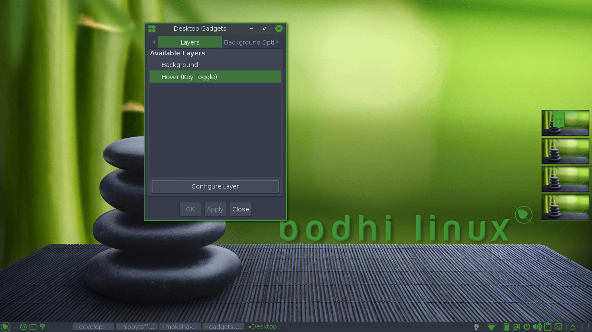
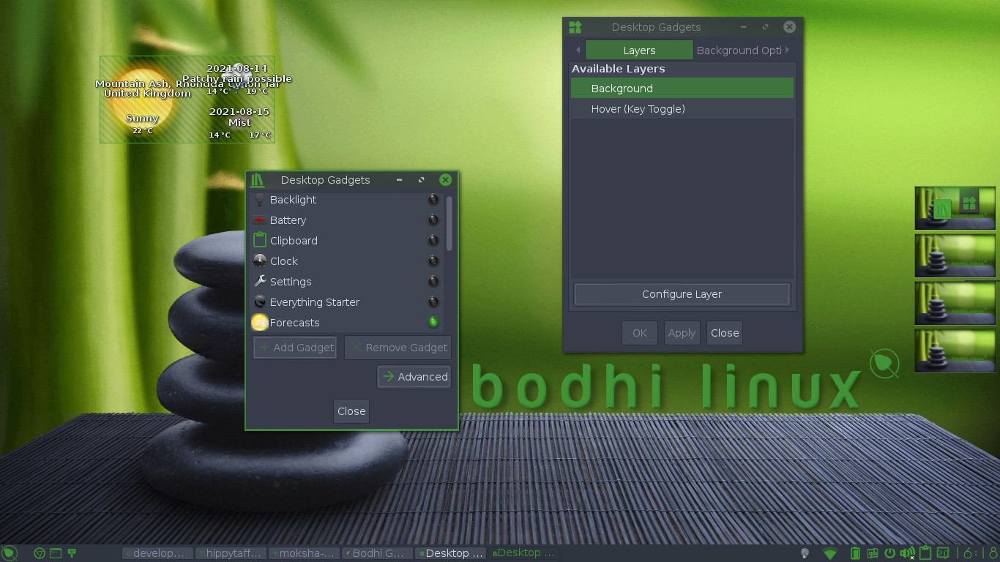

The Bodhi Guide to Moksha
Gadgets
What are Gadgets?
In Moksha, a Gadget is just about anything you see on the desktop. Gadgets are what other operating systems call "Applets" or "Widgets": small programs that do one thing and do it well. Several Gadgets are installed by default.
Most Gadgets can be placed either directly on the desktop or onto a Shelf, however, there are a few Gadgets (like Systray) that can only be placed on a Shelf.
Examples of Gadgets
|
Calendar & Clock |
|
|
Forecasts
|
|
|
Pager |
{kind=link}
{kind=link}
{kind=link}
{kind=link}
Adding New Gadgets
Gadgets can be added either to shelves or to the desktop itself. In order to add Gadgets to the desktop, go to Main Menu -> Settings -> Gadgets and the Desktop Gadgets dialog will open.

Select Background and click Configure Layer, then select a Gadget in the list, and press Add Gadget. The Gadget appears at the top left of the desktop with a blue crosshatching, indicating it can be moved and resized to your requirements. When the Gadget is in the proper place, right-click the Gadget to lock it.

Adding a Gadget to a Shelf
Adding a Gadget to a Shelf requires a slightly different procedure. See the Shelves Section of this Guide for details.
Gadget Settings
Once they are placed on the desktop or on a Shelf, each Gadget can be right-clicked to configure its appearance and its behavior. For example, when you first install the Forecasts Gadget, it gives you the weather for Sofia, Bulgaria. That is probably not what you want (unless, of course, you live there). So right-click it, open the menu Gadget Forecasts -> Forecasts Settings. In the dialog box that appears, you will see instructions for finding and entering the code for your city.
Gadgets Need Their Modules
What Gadgets you have available to add is determined by what Modules you have Loaded. Loading a Module reads it from disk storage and places it in RAM, but it won't be displayed on screen until you add it as a Gadget to the desktop or a Shelf. To Load/Unload Modules go to Main Menu -> Settings -> Modules. See the Modules Section of this Guide for more details.
Still more Gadgets
To keep the initial download and installation of Bodhi Linux as compact as possible, some excellent Modules were not included, but can be downloaded and installed via the Synaptic Package Manager just like other Linux programs.
For a full list of available Gadgets check the Module Reference.
See the Modules Section of this Guide for more details.
|
Prev: |
Contents: |
Next: |